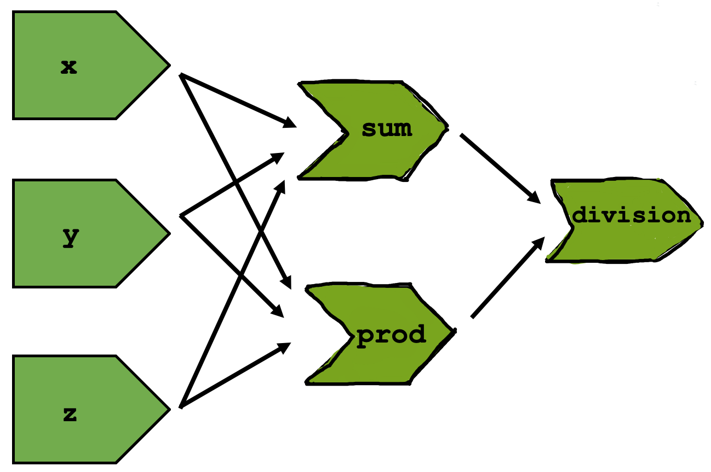

14 The reactive graph
14.4.5 Exercises
1.

- Reactives are not run because there are no outputs. Server function only contains inputs and reactive expressions.
Not sure
When we start the session,
ywould not exist and thusy()would return an error sinceyis a reactive expression that consists of itself.